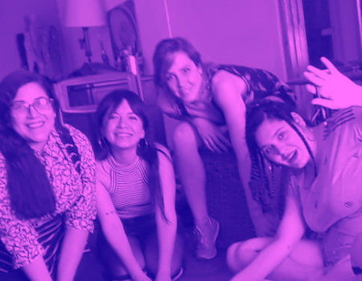

ENTRADAS:
Giselle Llamas / A/V Blog_


Publicado el:
Recuerdos de Atom
¿Nostalgia del futuro o recuerdos del pasado? Post Mortem de un legendario espacio de innovación.

Publicado el:
Pasado/ Presente
¡Representar a la UNA en la Noche de los Museos fue toda una experiencia, y te la cuento en esta entrada del blog!

Publicado el:
Visualizando RRayos
Actitud y fiereza, dos atributos que fueron plasmados en las visuales que creé para la artista argentina de Chiptune RRayen.